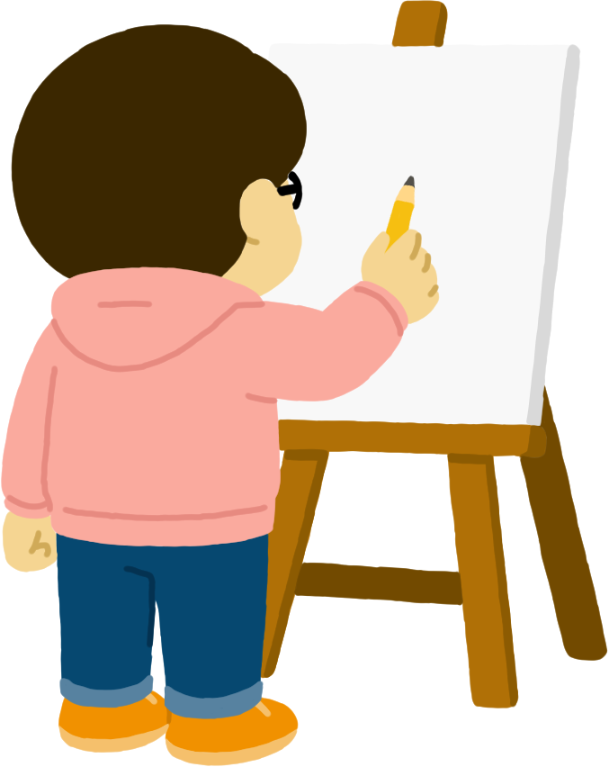

あしたの夜明け.com
あしたの夜明け.com は、日々の記録やイラスト、 ブログ、制作実績をゆっくり公開していく個人サイトです。
映画やイラスト、ガンプラ、多肉植物など、 好きなことを楽しみながらAIやWeb制作にも挑戦しています。
ネーム：あしたの夜明け
SNS

Instagramに投稿した作品を掲載するページです。
日常の記録や映画・趣味の雑記を綴ります。
制作したWebサイトなどを紹介します。
ご連絡・お仕事のご依頼はこちらから。